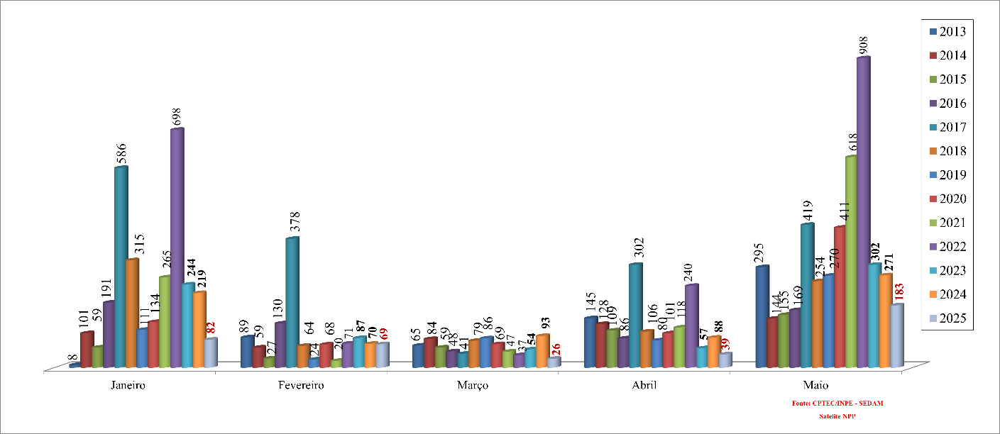

Problema a se Enfrentar
Em 2024 tivemos um estado de extrema preocupação quanto às queimadas pois foi registrado um total de 7.282 focos de incêndios de janeiro a setembro segundo o Instituto Nacional de Pesquisas Espaciais (Inpe), havendo um aumento de 169% se comparado com 2023 e, sendo Porto Velho responsável por 32% dos casos.

Área queimada em hectares. Fonte: monitor do fogo do Mapbiomas (2024)
Apenas no mês de agosto foi registrado um total 1076 atendimentos de pacientes com queixas de falta de ar nas Unidades de Pronto Atendimento, tendo um aumento de 50% se comparado ao mesmo período no ano anterior. 
Histórico de queimadas no estado. Fonte: Queimadas, INPE (2025)
A imagem acima mostra o histórico dos focos de calor no estado por meses e ,nela, é possível notar que houve uma redução significativa quanto à quantidade queimadas em 2025, porém, ao mesmo tempo, já é possível notar o aumento nas queimadas conforme a diminuição das chuvas.Soluções Públicas
Diante destas ações prejudiciais, o governo estadual e a prefeitura municipal de Porto Velho vêm tomando atitudes para transformar o futuro através de investimentos no presente.Recentemente a secretaria Municipal do Meio Ambiente(SEMA) tem ministrado diversas visitas ao Parque Natural de Porto Velho para alunos da rede municipal visando formar cidadãos mais conscientes através de atividades que integram a Educação ambiental. Podemos pegar como exemplo a visita dos alunos da Escola Municipal Bhoemundo Álvares Afonso onde foram conduzidas dinâmicas interativas e explicações sobre a fauna, a flora e a importância dos recursos naturais protegidos na área do parque. Esta ação de visitas ao parque natural da cidade também foi ministrada com alunos de diversas outras escolas como por exemplo a visita de 180 alunos da Escola Estadual Lydia Johnson ao Parque Natural e ao Viveiro Municipal onde além do passeio, uma palestra educativa foi ministrada.
Além destas atividades educativas, a Prefeitura abriu um edital de chamamento público para celebrar termo de cooperação com organização para prevenir e combater incêndios urbanos, rurais e florestais no município. O objetivo é selecionar uma organização experiente e especializada para atuar entre julho a novembro de 2025 em regime de plantão 24h/dia, 7 dias na semana e também elaborar, implantar e executar os planos de trabalho.
Seguindo pelo mesmo caminho, o Tribunal de Contas do Estado de Rondônia(TCE-RO) reuniu, no dia 2 de maio, autoridades estaduais para cobrar ações concretas e coordenadas de prevenção e combate às queimadas e incêndios florestais visando prevenir que o cenário de 2024 se repita. Durante esta reunião, foi anunciado pelo estado um investimento de R$88 milhões de reais e seu plano para 2025, onde foi apresentado o planejamento de criar bases descentralizadas, uso de viaturas, aeronaves e capacitação de equipes para enfrentamento. Neste encontro também foram apresentados números pelo governo estadual, onde, somente em 2024, 190 autos de infração foram lavrados, totalizando R$48 milhões em multas relacionadas a desmatamento ilegal e queimadas ilegais, além de prisões e apreensões de equipamentos.
Também quanto às queimadas ilegais, o governo estadual apresentou a Operação Rondônia Verde, onde houve um treinamento intensivo de 929 civis de 51 municípios treinados por instrutores do Corpo de Bombeiros Militar de Rondônia(CBMRO) para atuação terrestre e aérea durante os meses críticos da estiagem, sendo uma das principais apostas do estado no enfrentamento das queimadas ilegais e incêndios ilegais.
Para este ano, foi projetada uma redução de 50% nas queimadas e 40% no desmatamento ilegal em áreas prioritárias até o final de 2025 e, para os meses mais críticos de estiagem, foi previsto um reforço logístico com aeronaves e viaturas para uma resposta rápida aos focos detectados.
Podemos concluir que, tanto a gestão municipal quanto a estadual, têm dado a devida importância para a crise ambiental de Rondônia e, espera-se dos cidadãos que, junto ao poder público, lutem para que tenhamos um horizonte de futuro e sem fumaça.
Ajude a combater as queimadas! Denuncie via WhatsApp:
(69) 9 8423-4092
Obs: Em casos de incêndios que coloquem residências ou grandes áreas de mata em risco, o ideal é ligar diretamente para o 193, número de emergência do Corpo de Bombeiro Militar.